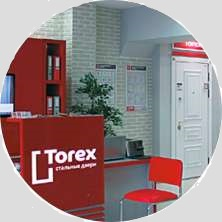

Почему покупатели выбирают двери Torex?
| Torex - «Марка №1 в России»! Для компании Torex одним из важных результатов юбилейного, 25-го, года стало признание ее «Маркой №1 в России - 2014». Ежегодная премия народного доверия «Марка №1 в России» (тогда - «Народная марка») впервые была вручена в 1998 году. Определение победителей построено в форме независимого голосования российских покупателей, проводимого в национальном масштабе. |
|
Двери Torex - «Всероссийская марка. Знак качества XXI века»! Для компании Torex одним из важных результатов юбилейного, 25-го, года стало признание ее «Маркой №1 в России - 2014». Ежегодная премия народного доверия «Марка №1 в России» (тогда - «Народная марка») впервые была вручена в 1998 году. Определение победителей построено в форме независимого голосования российских покупателей, проводимого в национальном масштабе. |
|
Поддержка клиентов  В фирменных салонах Torex работают консультанты с высокой квалификацией, прошедшие обучение на базе завода-производителя. Специалисты Отдела поддержки Клиентов всегда готовы ответить на Ваши вопросы. С Torex всегда комфортно! |